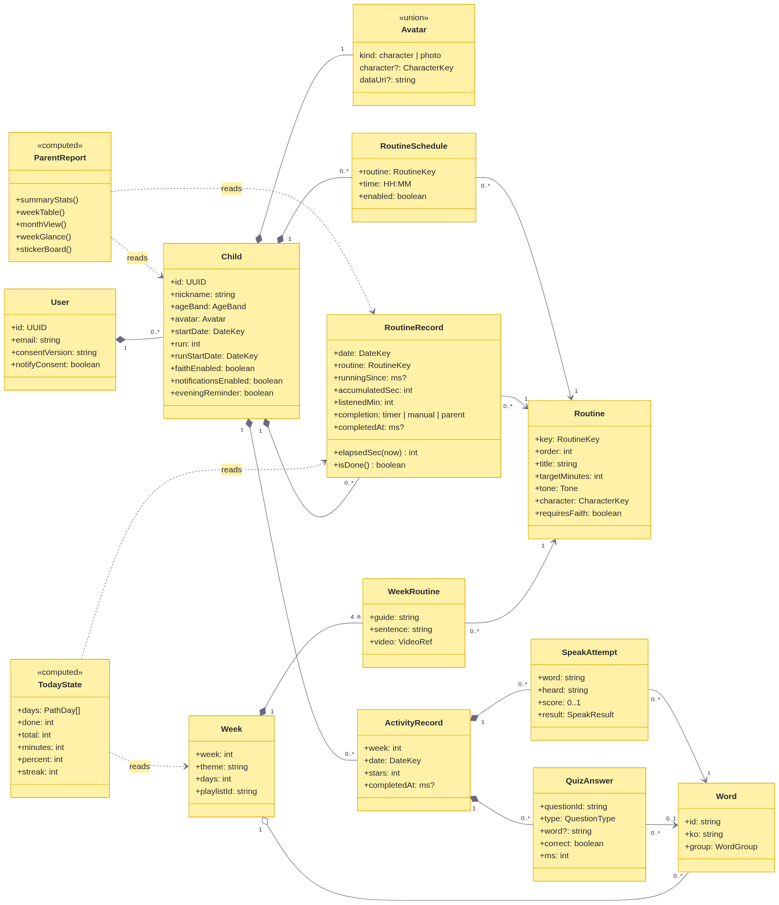
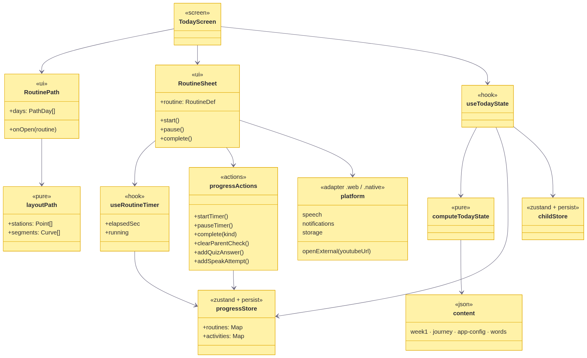
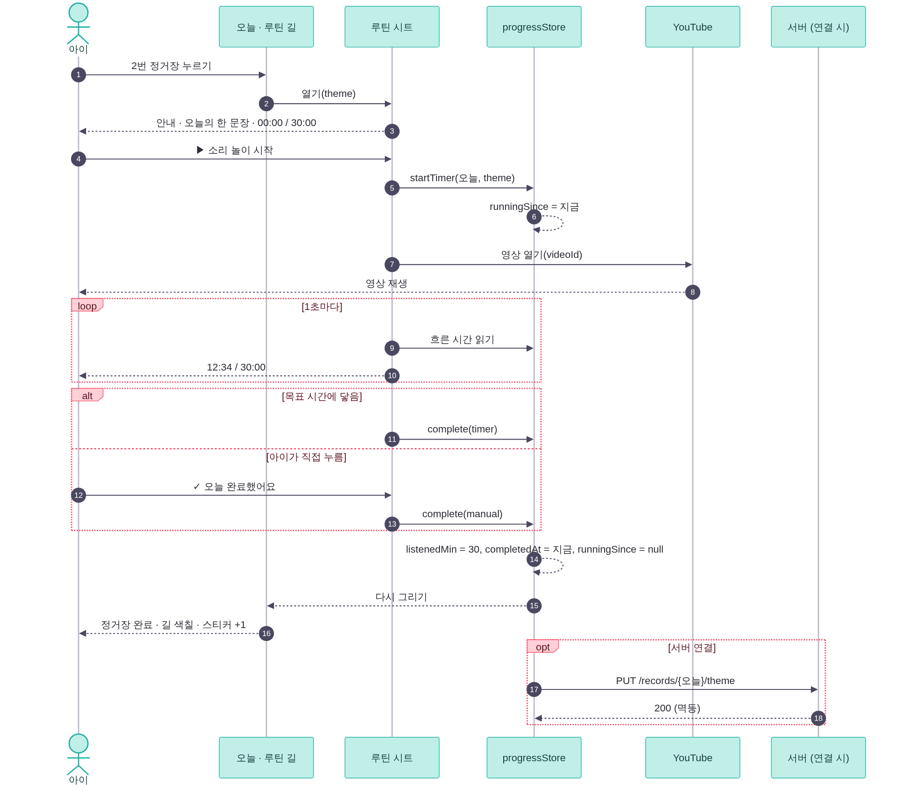
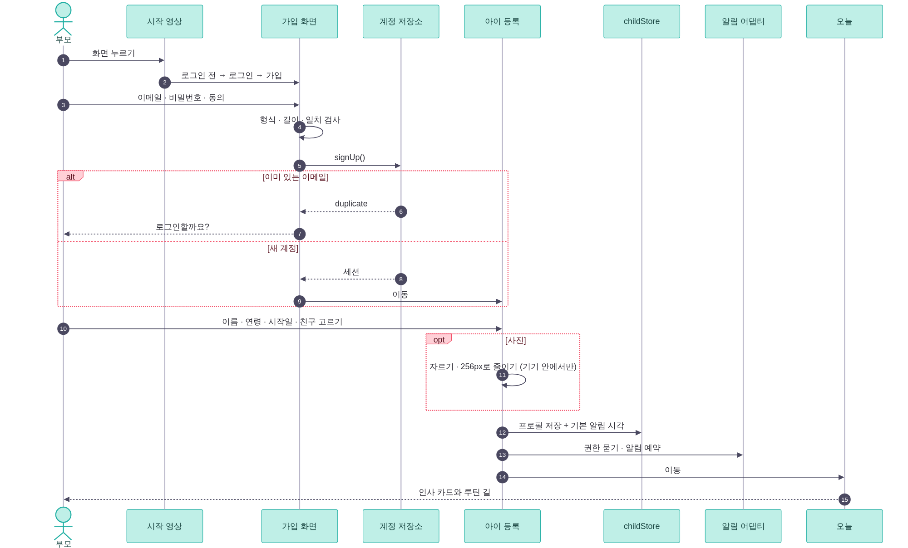
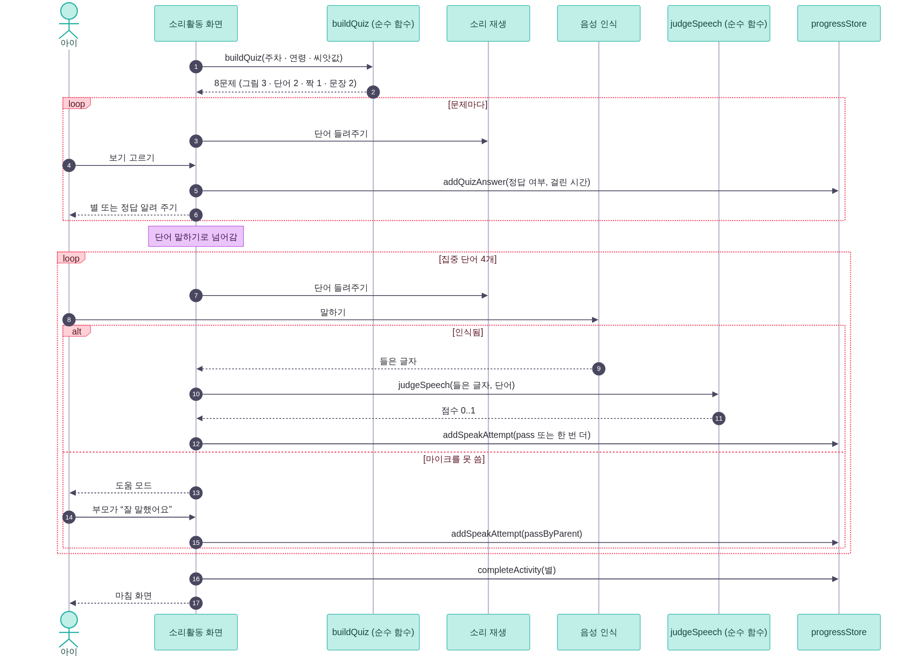
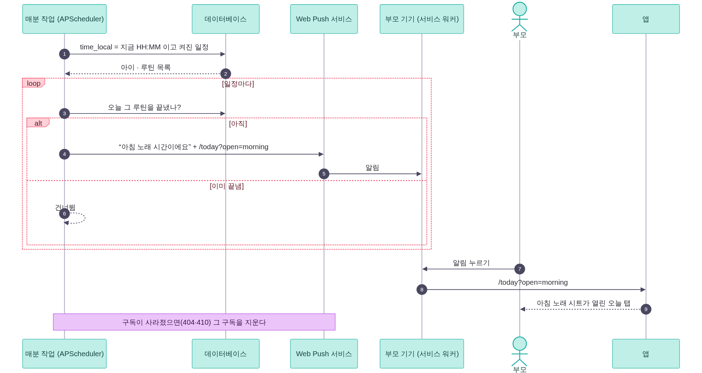
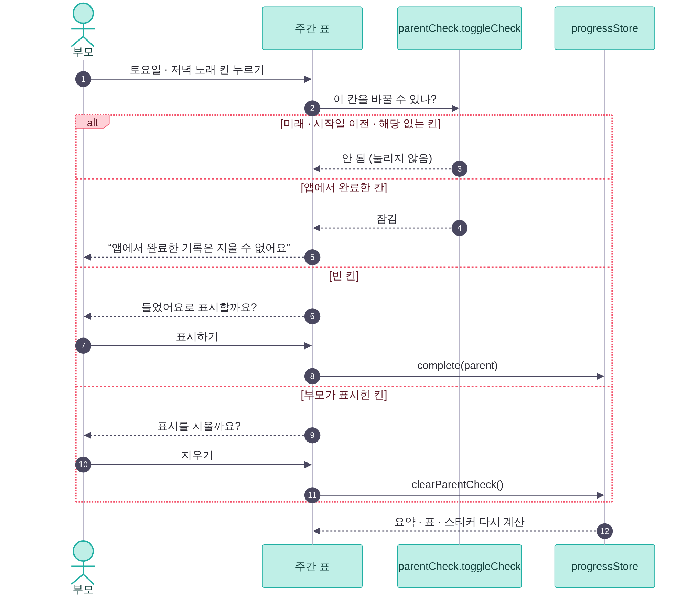
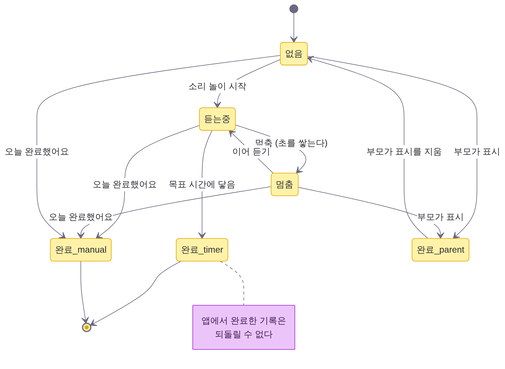
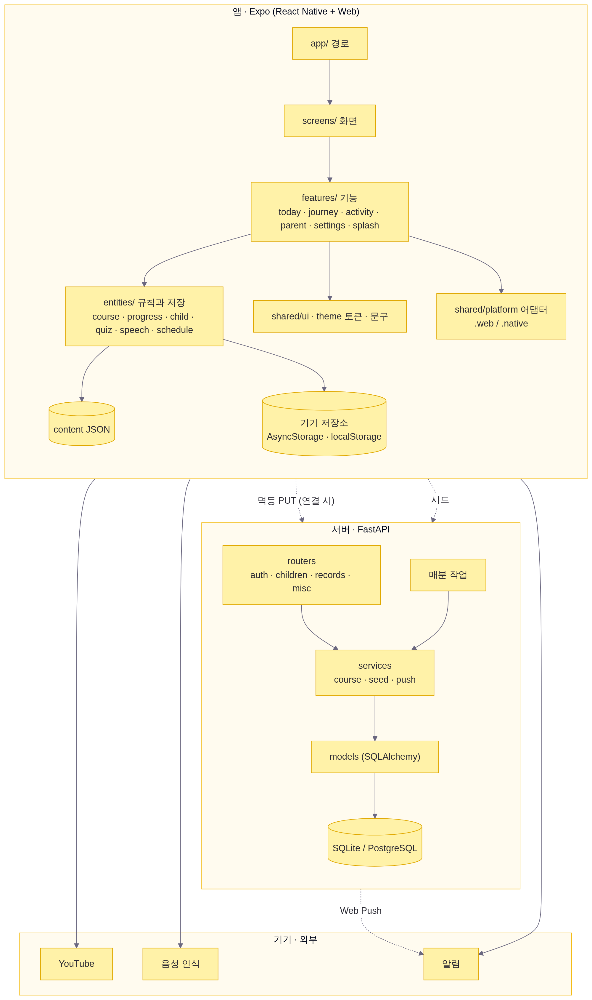
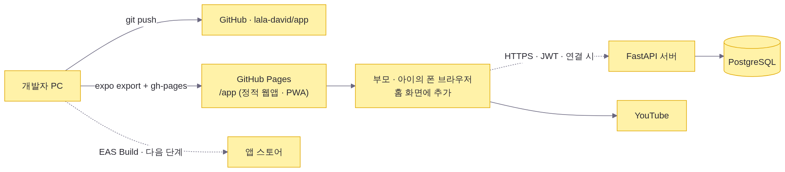

설계 모델 (UML)
유즈케이스 다이어그램은 03 문서에, ERD는 05 문서에 있습니다. 여기에는 클래스·시퀀스·상태·컴포넌트·배치 다이어그램을 모았습니다.
1. 클래스 다이어그램 — 도메인 모델
앱(entities/)과 서버(models.py)가 함께 쓰는 개념입니다. 계산은 모두 순수 함수로 두어 화면 없이 테스트합니다.

2. 클래스 다이어그램 — 앱의 층

3. 시퀀스 — 루틴 듣고 완료하기 (UC-03, UC-04)

4. 시퀀스 — 가입에서 첫 화면까지 (UC-01, UC-11, UC-12)

5. 시퀀스 — 소리활동 (UC-05, UC-06)

6. 시퀀스 — 알림 (UC-15)

이 그림은 서버를 연결했을 때의 Web Push 흐름입니다. 이번 버전은 서버 없이, 앱은 기기 알림을 미리 예약하고(buildUpcoming) 웹은 열려 있는 동안 서비스 워커로 알림을 띄웁니다.
7. 시퀀스 — ‘들었어요’ 표시 (UC-09)

8. 상태 — 루틴 기록

DB의 체크 제약이 이 상태를 그대로 지킵니다: 완료 방식과 완료 시각은 함께 있고, 완료된 줄은 running_since가 비어 있습니다.
9. 컴포넌트

10. 배치
